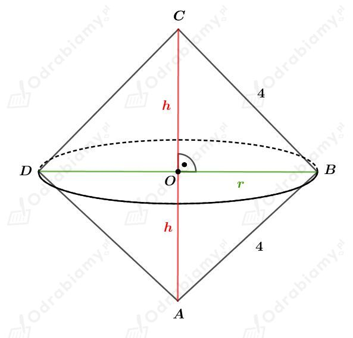
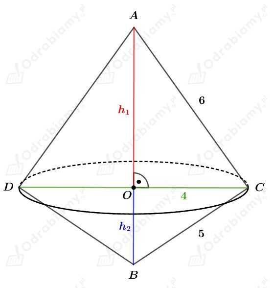
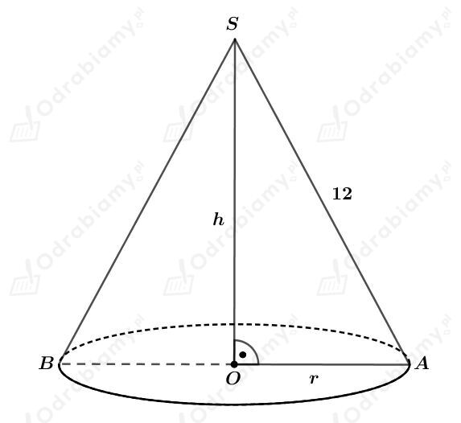
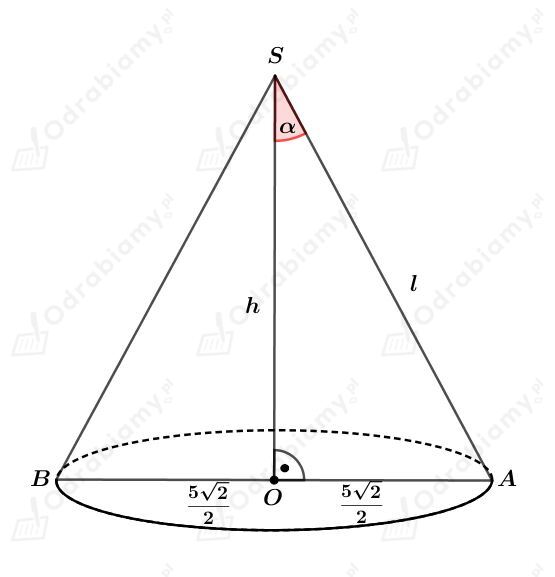
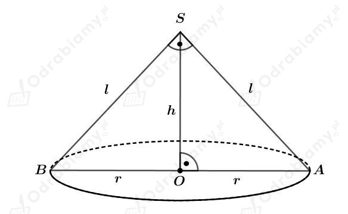
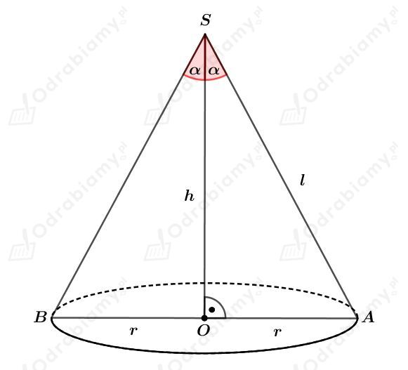
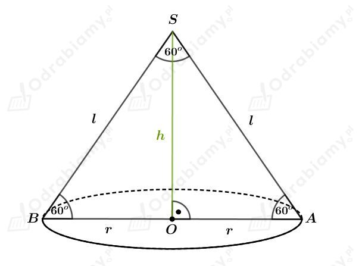
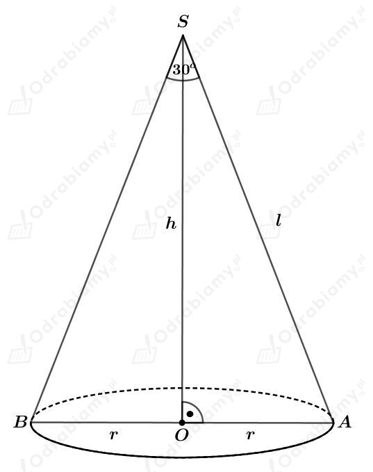
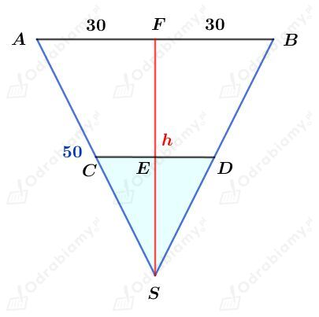
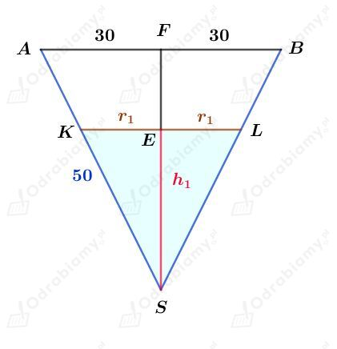

| Objętość stożka o promieniu podstawy r i wysokości długości h wyraża się wzorem: gdzie Pp jest polem powierzchni podstawy stożka. |
a)
Dany jest trójkąt równoramienny prostokątny o boku długości a i polu równym 8 cm2. Mamy zatem:
Trójkąt ten obracamy wokół przeciwprostokątnej i otrzymujemy bryłę przedstawioną na rysunku:

Zauważmy, że
zatem
oraz
Wyznaczmy objętość otrzymanej bryły. Mamy:
b)
Trójkąt ABC obracamy wokół boku AB i otrzymujemy bryłę przedstawioną na rysunku:

Korzystając z twierdzenia Pitagorasa dla trójkąta OCA mamy:
Korzystając z twierdzenia Pitagorasa dla trójkąta BCO mamy:
Wyznaczmy objętość stożka DCA. Mamy:
Wyznaczmy objętość stożka DCA. Mamy:
Wyznaczmy objętość otrzymanej bryły. Mamy:
| Pole powierzchni całkowitej stożka o promieniu podstawy r i tworzącej długości l wyraża się wzorem: gdzie Pp jest polem powierzchni podstawy stożka, a Pb jest polem powierzchni bocznej tego stożka. |
| Objętość stożka o promieniu podstawy r i wysokości długości h wyraża się wzorem: gdzie Pp jest polem powierzchni podstawy stożka. |
Powierzchnią boczną stożka po rozwinięciu jest wycinek koła o promieniu długości 12 cm i kącie środkowym 𝛼.
Rysunek stożka:

a)
Wiemy, że
Obliczamy pole wycinka koła będącego powierzchnią boczną stożka. Mamy:
Korzystając ze wzoru na pole powierzchni bocznej stożka mamy:
Korzystając z twierdzenia Pitagorasa dla trójkąta OAS mamy:
Obliczmy pole powierzchni podstawy tego stożka. Mamy:
Obliczmy objętość tego stożka. Mamy:
b)
Wiemy, że
Obliczamy pole wycinka koła będącego powierzchnią boczną stożka. Mamy:
Korzystając ze wzoru na pole powierzchni bocznej stożka mamy:
Korzystając z twierdzenia Pitagorasa dla trójkąta OAS mamy:
Obliczmy pole powierzchni podstawy tego stożka. Mamy:
Obliczmy objętość tego stożka. Mamy:
c)
Wiemy, że
Obliczamy pole wycinka koła będącego powierzchnią boczną stożka. Mamy:
Korzystając ze wzoru na pole powierzchni bocznej stożka mamy:
Korzystając z twierdzenia Pitagorasa dla trójkąta OAS mamy:
Obliczmy pole powierzchni podstawy tego stożka. Mamy:
Obliczmy objętość tego stożka. Mamy:
d)
Wiemy, że
Obliczamy pole wycinka koła będącego powierzchnią boczną stożka. Mamy:
Korzystając ze wzoru na pole powierzchni bocznej stożka mamy:
Korzystając z twierdzenia Pitagorasa dla trójkąta OAS mamy:
Obliczmy pole powierzchni podstawy tego stożka. Mamy:
Obliczmy objętość tego stożka. Mamy:
a)
Dany jest stożek o promieniu podstawy długości r i tworzącej długości l.
Powierzchnia boczna stożka po rozwinięciu jest wycinkiem koła o promieniu 15 cm wyznaczony przez kąt środkowy 𝛼. Zatem wiemy, że
Podstawę wycięto z kwadratu o boku długości 6 cm. Największe możliwe wycięte koło ma zatem średnicę długości 6 cm, więc
Wyznaczmy pole powierzchni bocznej tego stożka. Mamy:
Korzystając ze wzoru na pole wycinka koła otrzymujemy:
b)
Podstawą stożka jest koło opisanego na kwadracie o boku długości 5 cm. Długość promienia r takiego koła jest równa połowie długości przekątnej kwadratu. Mamy więc
Rysunek:

Wiedząc, że
otrzymujemy:
Korzystając z twierdzenia Pitagorasa dla trójkąta OAS otrzymujemy:
Wyznaczmy pole przekroju osiowego tego stożka. Mamy:
| Pole powierzchni całkowitej stożka o promieniu podstawy r i tworzącej długości l wyraża się wzorem: gdzie Pp jest polem powierzchni podstawy stożka, a Pb jest polem powierzchni bocznej tego stożka. |
| Objętość stożka o promieniu podstawy r i wysokości długości h wyraża się wzorem: gdzie Pp jest polem powierzchni podstawy stożka. |
a)
Rysunek:

Wiedząc, że pole trójkąta BAS wynosi S otrzymujemy:
Trójkąt BAS jest trójkątem prostokątnym równoramiennym, więc
Korzystając z twierdzenia Pitagorasa dla trójkąta OAS mamy:
Wyznaczmy pole powierzchni całkowitej tego stożka. Mamy:
Wyznaczmy objętość tego stożka. Mamy:
b)
Rysunek:

Wiemy, że pole powierzchni bocznej tego stożka jest dwukrotnie większe od pola jego podstawy. Mamy zatem:
Wyznaczmy sinus kąta 𝛼. Mamy:
czyli
więc
Kąt rozwarcia tego stożka ma miarę 60o.
| Pole powierzchni całkowitej stożka o promieniu podstawy r i tworzącej długości l wyraża się wzorem: gdzie Pp jest polem powierzchni podstawy stożka, a Pb jest polem powierzchni bocznej tego stożka. |
| Objętość stożka o promieniu podstawy r i wysokości długości h wyraża się wzorem: gdzie Pp jest polem powierzchni podstawy stożka. |
a)
Kąt rozwarcia stożka ma miarę 60o. Skoro każdy przekrój osiowy stożka jest trójkątem równoramiennym, to w tym przypadku będzie to trójkąt równoboczny.
Rysunek:

Skoro trójkąt BAS jest równoboczny, to
Pole powierzchni bocznej tego stożka jest równe 8𝜋 cm2, więc mamy:
czyli
Wysokość tego stożka jest wysokością trójkąta równobocznego o boku długości 4 cm. Korzystając ze wzoru na długość wysokości trójkąta równobocznego mamy:
Wyznaczmy objętość tego stożka. Mamy:
b)
Rysunek:

Wiedząc, że pole powierzchni podstawy wynosi (18-9√3)𝜋 cm2 mamy:
Korzystając z twierdzenia cosinusów dla trójkąta BAS mamy:
Korzystając z twierdzenia Pitagorasa dla trójkąta OAS mamy:
Wyznaczmy pole przekroju BAS. Mamy:
Wyznaczmy objętość tego stożka. Mamy:
| Pole powierzchni całkowitej stożka o promieniu podstawy r i tworzącej długości l wyraża się wzorem: gdzie Pp jest polem powierzchni podstawy stożka, a Pb jest polem powierzchni bocznej tego stożka. |
Rysunek:
Z treści zadania znamy pole powierzchni bocznej. Mamy:
więc otrzymujemy:
Z treści zadania znamy pole powierzchni całkowitej. Mamy:
więc otrzymujemy:
Wyznaczmy długość tworzącej stożka l. Mamy:
Wyznaczmy cosinus kąta 𝛼. Mamy:
czyli
| Objętość stożka o promieniu podstawy r i wysokości długości h wyraża się wzorem: gdzie Pp jest polem powierzchni podstawy stożka. |
Naszkicujmy przekrój tego zbiornika:

Korzystając z twierdzenia Pitagorasa dla trójkąta ASF mamy:
Poziom wody sięga połowy wysokości stożka. Wyznaczmy objętość tej wody. Mamy:
W zbiorniku znajduje się 1,5𝜋 l wody.
Rozważmy przypadek, kiedy woda zajmuje połowę objętości tego zbiornika.
Wyznaczmy objętość tego stożka. Mamy:
Woda zajmuje połowę objętości tego zbiornika. Zatem wyznaczmy objętość wody. Mamy:
Naszkicujmy przekrój tego zbiornika:

Korzystając z podobieństwa trójkątów AFS i KES otrzymujemy:
Korzystając ze wzoru na objętość stożka otrzymujemy: